- tracks sphere
- cylinder pieces
- pieces of cone
- parallelograms
- triangles
- Disk methods presented here are of course changed at your leisure. The limits an object will be defined in simple position. 97
 With limited items, we will be able to create:
With limited items, we will be able to create:
- tracks sphere
- cylinder pieces
- pieces of cone
- parallelograms
- triangles
- Disk
methods presented here are of course changed at
your leisure.
The limits an object will be defined in simple position.
97

 Is desired to remove the top portion of a sphere at
Is desired to remove the top portion of a sphere at
half the radius  .
In the simple position, simply to say that the points
above the plane does not belong to the sphere.
.
In the simple position, simply to say that the points
above the plane does not belong to the sphere.



98
 Specifically:
Specifically:
- Calculation of the intersection with the single object position.
- point calculation  of intersection still single position.
of intersection still single position.
- Have we ? If so, the sphere function
`` not respond intersection. '' Otherwise, nothing is changed.
- is calculated, contact information , and are
transformed by rotations and translated as usual.
The data on the sphere are enriched:
- origin - ray - color - 3 rotations - brightness coefficient
- high limit - lower limit - soon transparency, reflection,
texture, disturbance functions.
99


 The cylinder and cone in their simple position are arranged
The cylinder and cone in their simple position are arranged
along the axis  .
The same test is used for the sphere:
Our two objects are enriched by features 2
additional.
100
.
The same test is used for the sphere:
Our two objects are enriched by features 2
additional.
100
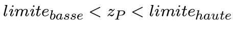

![\ Includegraphics [height = 6cm] {} cylcol.eps](./rt8_files/img93.png)
 Each of the following cases involves adding data to the
Each of the following cases involves adding data to the
definition of the plan.
The disc: one tests (Remember we are in the
plane ).
The parallelogram defined by and in the plan :
we want to have with and between and .
We obtained rapidly and .
If and do not fulfill the condition, the map function
responds `` no intersection. ''
The triangle with exactly the same calculation is tested, PLUS
the parallelogram, so .
101 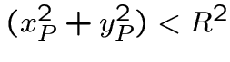
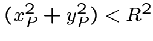
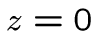 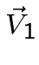
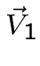
 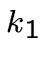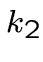
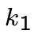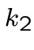


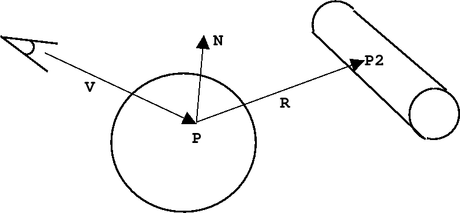
 So we henceforth 2 colors for our point P:
So we henceforth 2 colors for our point P:
that from the object itself (with light) and that
of the reflected beam. Are combined as follows:
103

 This is to achieve a transparent effect (you guessed?)
As for reflection, a constant transparency between
and characterize this property to our objects.
Here, too, we will go through the calculation of a `` transmitted beam '':
where and are the refractive indices of
different backgrounds, and being in the middle index .
Our vectors must be unitary. In case the part under
the square root is negative, it will be considered the void.
The refractive index of air is . We already have good
results with objects having similar indices: or .
104
This is to achieve a transparent effect (you guessed?)
As for reflection, a constant transparency between
and characterize this property to our objects.
Here, too, we will go through the calculation of a `` transmitted beam '':
where and are the refractive indices of
different backgrounds, and being in the middle index .
Our vectors must be unitary. In case the part under
the square root is negative, it will be considered the void.
The refractive index of air is . We already have good
results with objects having similar indices: or .
104


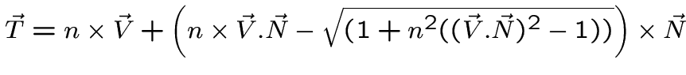

 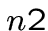
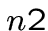


 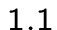
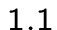
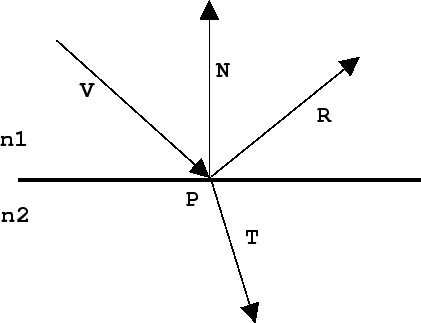
 The combination of original color / transmitted is done on
The combination of original color / transmitted is done on
the same principle as the reflection:
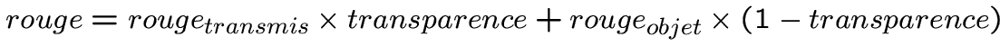
105
 The shadows on objects will become a little more
The shadows on objects will become a little more
complicated to treat (but not much more complex).
The case is: between my subject and my spot ,
there is an object . The only snag is transparent, almost.
Logic would therefore my subject almost as much
informed that there was not .
To solve this problem, we will calculate a coefficient
of transparency global to all objects between and .
This will be the product of all the coefficients of items:
.
If there are no objects or all objects are completely
transparent . For moderately transparent objects
approaches . Finally, when an object is completely
opaque, its coefficient is zero and therefore , whatever
other objects.
106


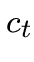


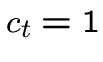


![\ Includegraphics [height = 12cm] {} ombtra.eps](./rt8_files/img96.png) 107
107


 Watch a spot face, you are dazzled. Our
Watch a spot face, you are dazzled. Our
current model of Raytracer does not handle this.
Let's break down the phenomenon
- more one looks at a point near the spot, the color
perceived is lively and close to that of the spot.
- the more you look away direction of the spot, less
the final color depends on the spot.
We get the angle between our view vector
and the vector . More from this angle, the smaller one
is dazzled. The angle will serve to involve
the light spot on the eye.
The direct light can be understood as the brightness
created by a spotlight on our eye.


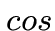
109
![\ Includegraphics [height = 8cm] {} lumdirect.eps](./rt8_files/img97.png)
 What will happen when you look at a light source
What will happen when you look at a light source
in a mirror? You have an important shine.
Similarly, when a spot is behind an object
relatively transparent, you have been through
a luminous glow.
How to account for this?
By trusting his code!
Indeed : to involve reflection (or transparency),
we wondered `What color do you see if the eye is
and looks after ''?
The code to calculate the color seen by the eye was
reused recursively.
If it includes the `` direct light effect '', the point
after watching will be dazzled, and forward this
effect to our eye.


111
![\ Includegraphics [height = 12cm] {} lumieretotal.eps](./rt8_files/img99.png) 114
114